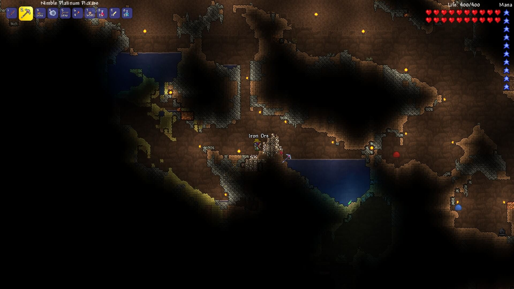

Subsuelo y Cavernas
Publicado: 11 mayo 2025
Una vez que ya tenés tu base construida y sobreviviste la primera noche, es momento de empezar a excavar. Ir al subsuelo es el siguiente paso natural para progresar en Terraria. Allí encontrarás minerales, cofres, enemigos, y hasta accesos a biomas más profundos.
⛏️ Cómo empezar a excavar
- Usá tu pico para cavar una mina vertical cerca de tu casa. Las plataformas de madera permiten subir y bajar con facilidad.
- Colocá antorchas a medida que descendés para mantener la visibilidad y evitar emboscadas.
- Traé suficiente madera para hacer más plataformas o mesas de trabajo temporales.
üéí ¬øQu√© llevar antes de bajar?
- Antorchas: para iluminar tu camino y ver enemigos ocultos.
- Plataformas y cuerda: útiles para acceder a lugares altos o salir de pozos.
- Pociones de salud: pueden salvarte si te rodean enemigos.
- Armas a distancia: como arcos o shurikens, ideales para lugares estrechos.
üíé Recursos clave
En las primeras capas subterráneas (Underground) podés encontrar minerales como:
- Hierro, plomo, plata y tungsteno: esenciales para mejorar herramientas y armaduras.
- Gemas: como amatistas o rubíes, que sirven para ganchos y bastones mágicos.
- Estatuas, trampas y cofres: algunas estatuas se pueden usar más adelante con mecanismos.
⚠️ Peligros comunes
- Las trampas de dardos y bloques trampa son comunes.
- Los enemigos pueden caer desde plataformas altas. Siempre tené un arma lista.
- Tené cuidado con los pozos llenos de agua o lava. Podés morir rápidamente si caés desprevenido.
Las cavernas no solo te dan acceso a recursos, sino que también son clave para desbloquear el progreso del juego: mejorar tu equipamiento, encontrar corazones de vida (Cristales de corazón) y obtener tus primeros ganchos y accesorios importantes.